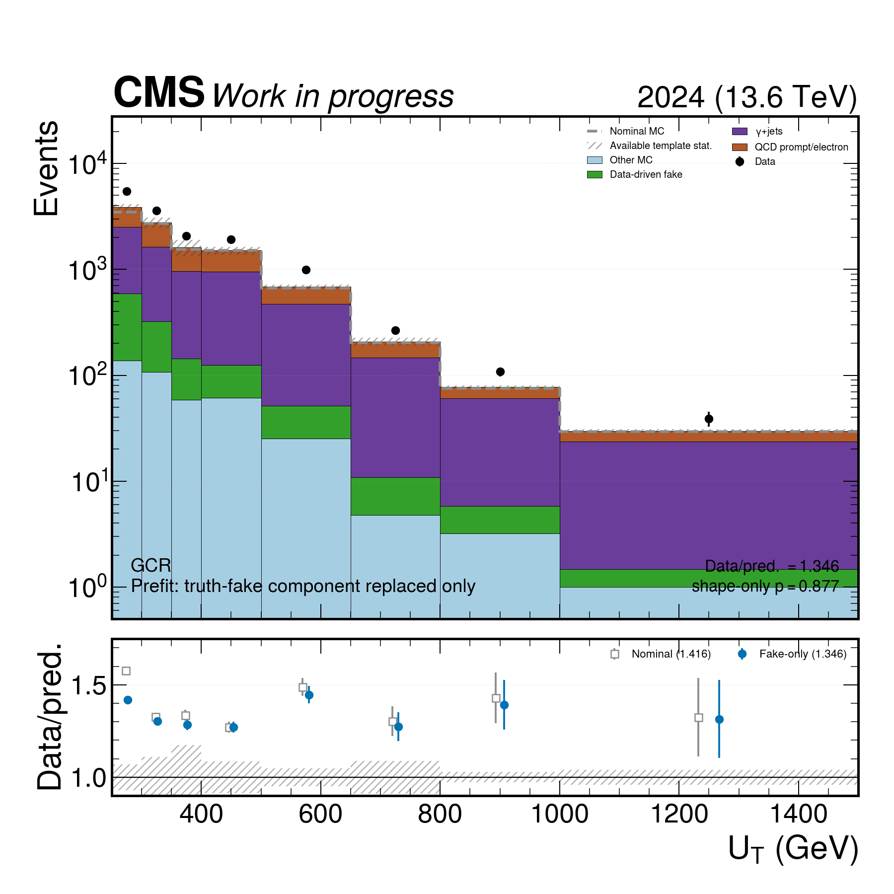
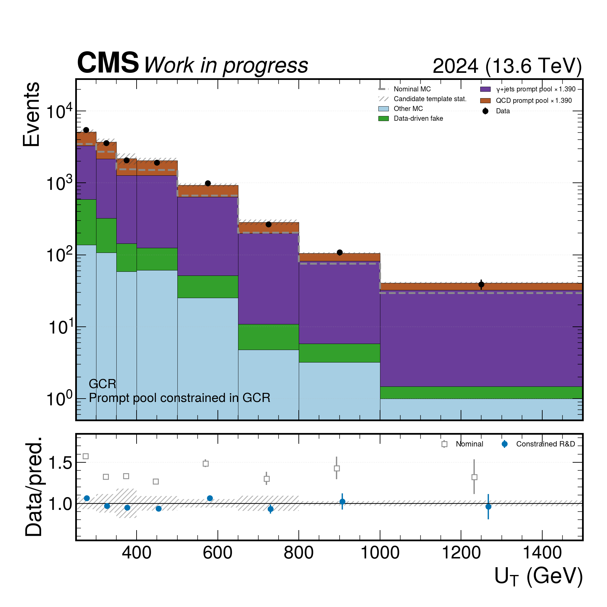
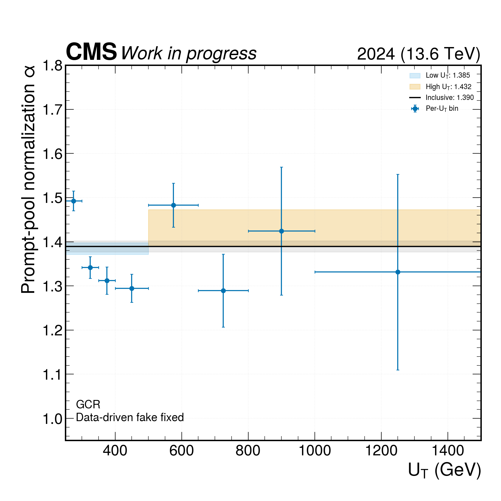
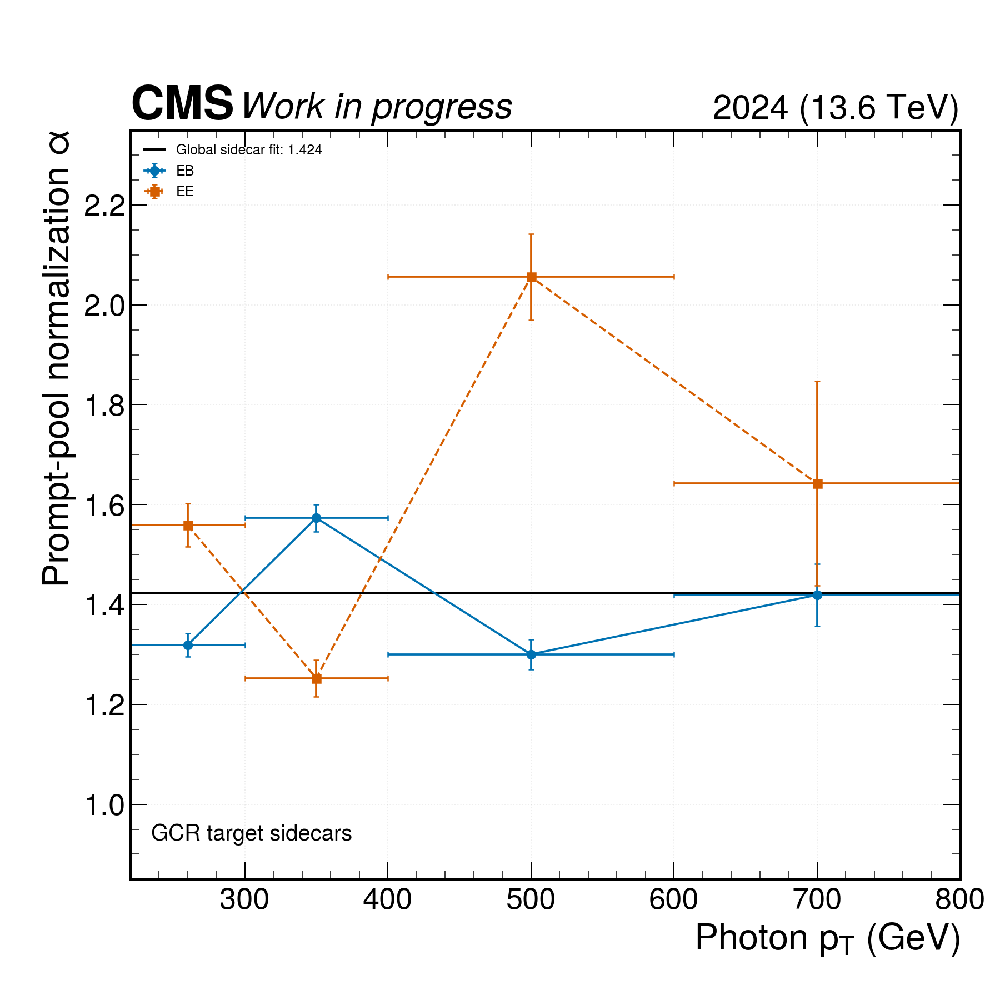
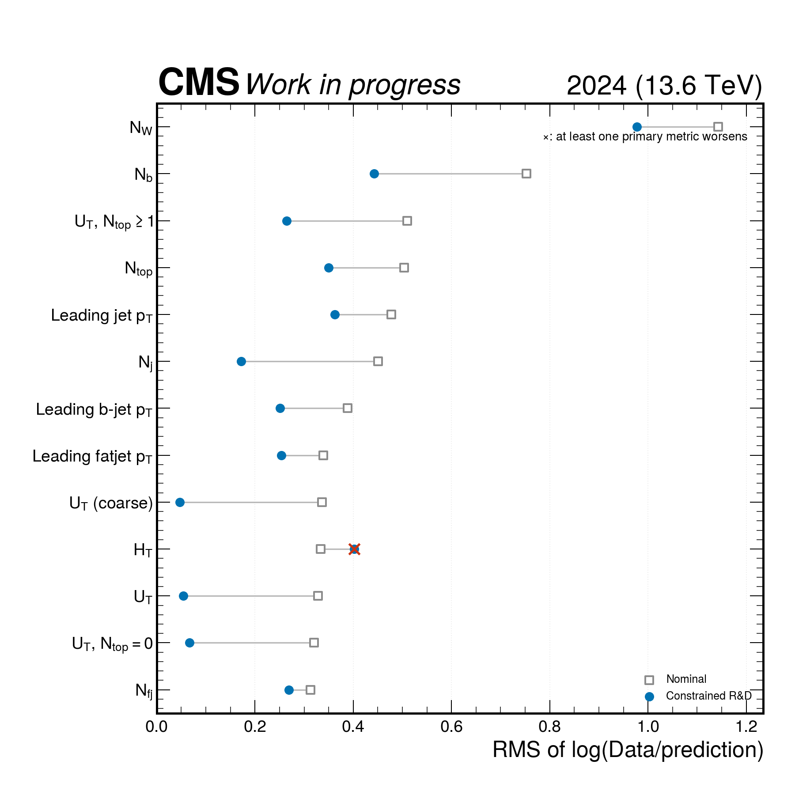
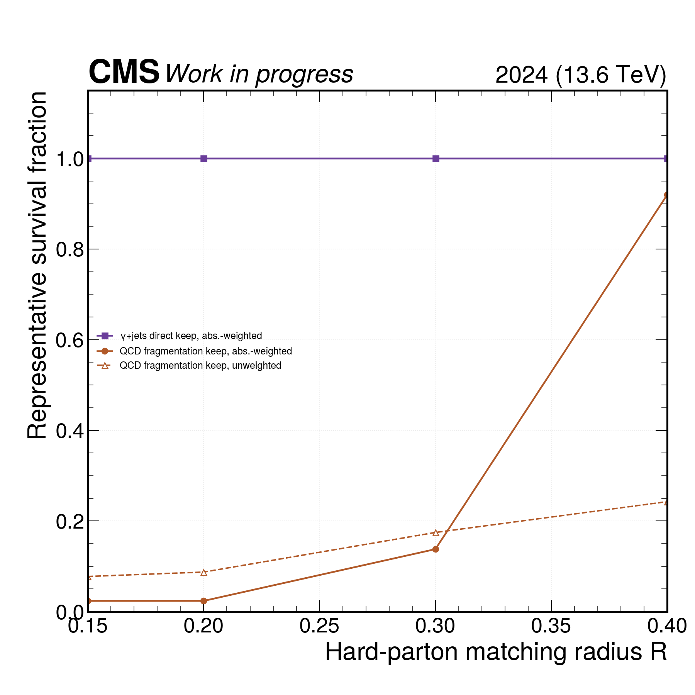

2024 high-dM GCR Data/MC improvement study
Selection source: real_subset_worker.py.
Nominal histograms are read-only. Legacy processors and IDs are not used.
Primary evidence

Pure prefit comparison: only the truth-fake photon component is replaced by the data-driven estimate. No prompt-photon rate constraint is applied.

The conditional model retains other MC, inserts only the data-driven fake component, and constrains the γ+jets + QCD-prompt pool together.

Low-UT and high-UT fits are compatible at the few-percent level; no per-bin reweighting is used.

EB/EE and photon-pT sidecar diagnostic. The final open bin is shown with a finite display endpoint only; it is not used to define a correction.

A single prompt normalization improves all four primary metrics in 12 of 13 valid distributions. HT remains a failed validation gate.

Representative exact-GCR hard-parton scan. The QCD weighted result jumps with radius because a few large-weight events dominate; no radius is adopted from this diagnostic.
Candidate comparison
| Policy | α from GCR UT | Distributions improving all metrics |
|---|---|---|
| fit_gjets_keep_nominal_qcd | 1.7710 | 13/13 |
| fit_gjets_with_data_fake_drop_qcd_prompt | 2.3897 | 11/13 |
| fit_prompt_pool_with_data_fake | 1.3895 | 12/13 |
| replace_entire_qcd_with_data_fake | — | 0/13 |
| replace_truth_fake_only | — | 13/13 |
Decision
- Reject replacing all QCD with the fake estimate: it worsens GCR Data/MC from 1.416 to 2.137.
- Retain the data-driven estimate only for the truth-fake component.
- Treat α≈1.39 as a GCR-constrained nuisance/transfer input, not as a universal prefit rescaling.
- Do not adopt until γ+jets/QCD direct-vs-fragmentation overlap is made explicit and HT, Nb, and jet-related closure gates are passed.
Machine-readable provenance:
summary.json,
nominal shape/data audit,
representative overlap audit,
and
normalization/correction audit.